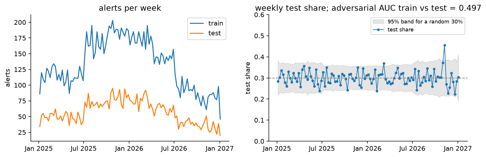
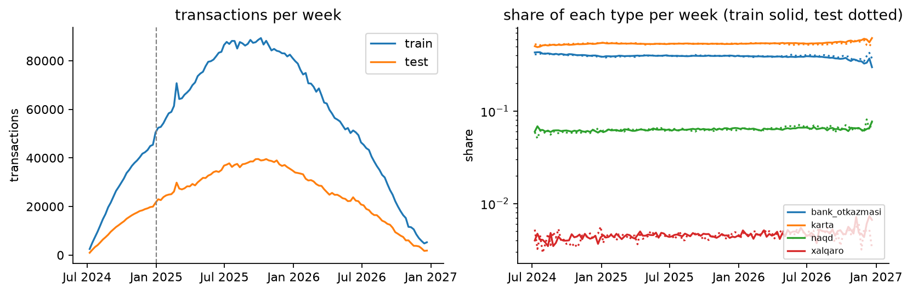
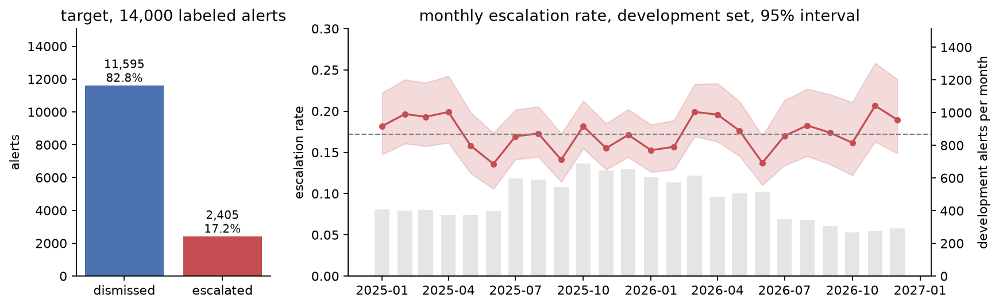
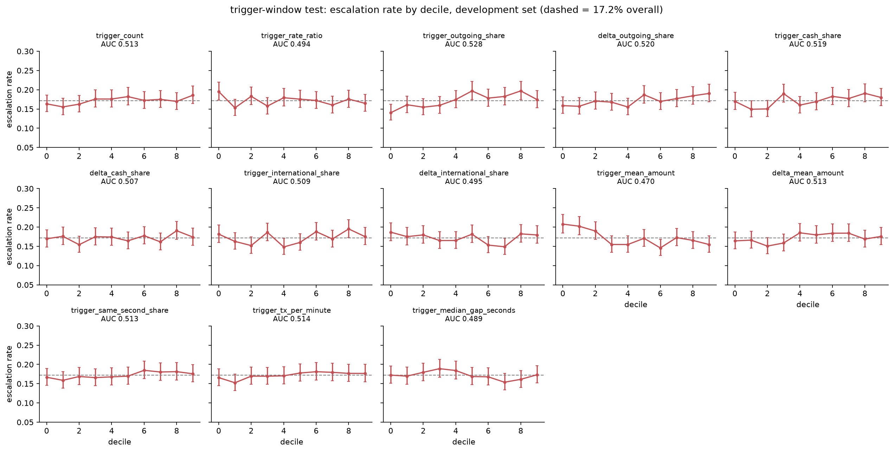
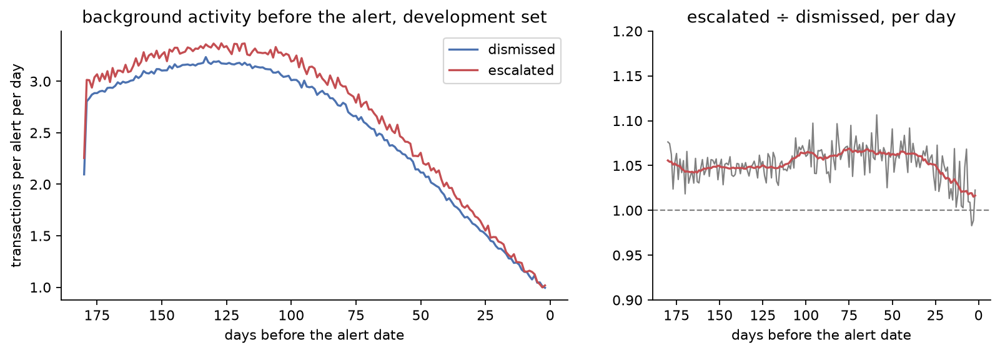
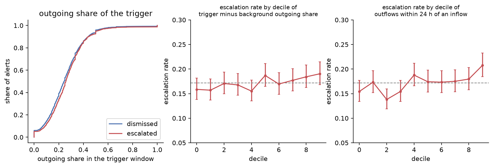
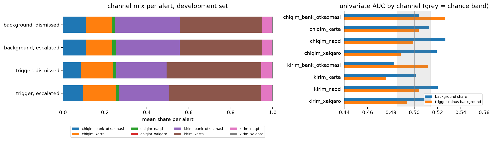

01
What we expected, and what the data said
We began with a textbook plan for alert triage, built on how bank monitoring teams usually reason: validate on a later time period, look for night-time and weekend activity, link alerts that belong to the same customer, flag round amounts, summarize behavior over generic 1- to 90-day windows, and expect the risk to show in the burst of activity right before an alert and in unusually large amounts. Before building any model, we tested each of these assumptions against the data. Most of them did not survive, and every one that failed changed the plan.
-
01 · Validation
We assumedThe hidden test set is a later period, so validation has to be a time split.
The data showedTest alerts are spread evenly through the same two years: 30% of the alerts in every quarter and in every ID decile belong to the test set, and IDs, file order and dates carry no signal (AUC 0.50 to 0.51).
So weUse stratified, shuffled 5-fold cross-validation on alerts, plus a 20% holdout scored once as a warning check.
-
02 · Customers
We assumedSeveral alerts belong to the same customer, and a customer's earlier alerts are a strong signal.
The data showedNot one of the 10 million transaction rows appears under more than one alert.
So weTreat every alert as an independent history: no grouped folds, no linked-alert features.
-
03 · Leakage
We assumedSome transactions happen after the alert and could leak the analyst's decision.
The data showed0 transactions fall after the alert date, and transactions are observed within a common 180-day lookback window before it.
So weKeep one pipeline, with every window measured backwards from the alert date.
-
04 · Clock time
We assumedNight-time and weekend activity are red flags.
The data showedHours 0 to 22 each hold 3.8% of transactions and every weekday holds 14.3%. The one peak, hour 23, is the burst right before the alert.
So weDrop hour-of-day and weekday features, and measure time relative to the alert instead.
-
05 · Time windows
We assumedGeneric 1-, 3-, 7-, 30- and 90-day windows describe recent behavior well enough.
The data showedAbout 8% of all transactions sit in the last few minutes before the alert date begins, on top of a slowly declining 180-day background.
So weSplit every history into the trigger window and the background, and model the change between them.
-
06 · Trigger boundary
We assumedThe trigger is simply the last calendar day before the alert.
The data showedIn 7,200 of 14,000 alerts that day also holds ordinary transactions, which stretches the median burst from 2.8 to 135 minutes.
So weMeasure timing features, such as compression and the silence before the burst, on the last hour only.
-
07 · Amount scale
We assumedThe amount index is standardized within each alert, or
exp(index)gives back money.The data showedPer-alert means spread with a standard deviation of 0.49, so it is one global scale, and each payment channel is its own shifted bell curve. The exact transform is unknown.
So weJudge amounts against their own channel, and keep
exp(index)only as an experimental feature. -
08 · Round amounts
We assumedStructuring shows up as repeated round amounts.
The data showedOnly 4 values repeat exactly among seven million training rows, and each is the cap of one transaction type.
So weDescribe structuring by similar cash deposits with a low spread, not by identical ones.
-
09 · Trigger burst
We assumedThe burst right before the alert, especially compared with the customer's own background, is what analysts react to.
The data showedAcross 13 variables describing the burst and its change from the background, the AUC stays between 0.470 and 0.528. Used together they reach 0.547, below the 0.614 of simple 180-day totals.
So weKeep the trigger only as a compact, low-priority feature family, and put the main effort elsewhere.
-
10 · Large amounts
We assumedLarge transactions are the red flag.
The data showedEscalated alerts make smaller bank transfers, at every point in the six months. Judged against the alert's own card spending, this is the strongest single signal we found (AUC 0.603).
So weBuild the main feature family from amounts judged within each channel and against the alert's own level in other channels.
What survived these checks became the approach below. The sections after it show the evidence behind each change.
02
Approach
Every alert in the data has already passed a monitoring rule, so the dismissed alerts are near misses, not ordinary customers. The label is an analyst's decision. It reflects what the rule saw, how that compares with the customer's usual behavior, and human factors such as workload. Our goal is to rank the alert queue so that the alerts most likely to be escalated come first. The score is ROC-AUC on a hidden test set, and each team submits once.
- Audit first. Before looking at the target, check integrity, how the test set was drawn, and anything that could leak the label.
- Fix validation once. The labeled alerts are split 80 / 20, stratified on the label. Every decision uses the same 5-fold cross-validation on the 80% development set. The 20% holdout is scored once, after features, models and blend are frozen, as a warning check. The final model is then refit on all 14,000 labeled alerts.
- Explore behavior on the development set. Each history is split into the customer's background and the trigger window just before the alert, and escalated and dismissed alerts are compared on both.
- Turn observations into features. Each idea becomes a feature family. A family stays only if cross-validated AUC improves on average and on at least 4 of 5 folds.
- Model. Gradient-boosted trees (LightGBM and CatBoost), blended by rank average, since AUC depends only on the order of the scores.
03
Dataset
Each set has two tables. The signals table holds one row per alert: its ID, the alert date and, in training, the label. The transactions table holds each alert's history, one row per transaction, with a timestamp, a direction, a type and a standardized amount index. There is no customer ID, no account balance, no counterparty and no information about which rule fired.
| Train | Test | |
|---|---|---|
| Alerts | 14,000 | 6,000 |
| Transactions | 6,987,663 | 3,027,575 |
| Alert dates | Jan 2025 – Dec 2026 | Jan 2025 – Dec 2026 |
| Transactions per alert, median | 461 | 460.5 |
| Transactions per alert, 99th percentile | 1,350 | 1,361 |
| Lookback window before the alert date | 180 days | 180 days |
| Escalated | 2,405 (17.2%) | hidden |
Columns
| Table | Column | Meaning |
|---|---|---|
| signals | signal_id | alert ID, one row per alert |
| signals | signal_sanasi | alert date (day precision) |
| signals | eskalatsiya | target: 1 = escalated, 0 = dismissed (training only) |
| transactions | tranzaksiya_vaqti | timestamp, second precision |
| transactions | kirim_chiqim | direction: kirim = incoming, chiqim = outgoing |
| transactions | tranzaksiya_turi | type: karta = card, bank_otkazmasi = bank transfer, naqd = cash, xalqaro = international |
| transactions | miqdor_indeksi | standardized transaction-size index; the exact transform is unknown |
Transaction mix
Share of all training transactions by direction and type.
| Card | Bank transfer | Cash | International | All | |
|---|---|---|---|---|---|
| Incoming | 41.3% | 29.3% | 4.8% | 0.35% | 75.7% |
| Outgoing | 12.5% | 10.2% | 1.6% | 0.11% | 24.3% |
| All | 53.8% | 39.4% | 6.3% | 0.46% | 100% |
Card payments and bank transfers make up 93% of all transactions, cash 6% and international transfers under half a percent. Train and test shares agree within 0.2 percentage points. International activity is sparse within a single alert, so it is best described by counts and flags rather than distributions.
Data quality
Before trusting any pattern, we checked the data itself:
- No missing values, no duplicate alert IDs and no exact duplicate transaction rows.
- Every alert has transactions, and every transaction belongs to a known alert.
- Alert IDs, file order and alert dates carry no information about the label (AUC 0.50 to 0.51).
- No transaction appears under two alerts, so every alert is an independent history and there is no prior-alert history to recover.
- The test set is a random 30% of alerts over the same two years, as the next view shows.
How the test set was drawn
If the hidden test set were a later period, or a different kind of alert, cross-validation on training alerts would misjudge the score. Two checks rule that out. Week by week, train and test alerts rise and fall together, and the weekly test share stays inside the band a random 30% draw would produce in 101 of 105 weeks. A classifier trained to tell test alerts from training alerts, on 29 per-alert totals, scores an AUC of 0.497, no better than a coin.

The test set is a random sample of the same alerts, so shuffled, stratified cross-validation on the training alerts faces the same task as the hidden test. No time-based or drift correction is needed.
04
What the transaction history looks like
With the data checked, the next question was what the months before an alert look like. Three views changed our plan the most.
Months of background, then a burst
Transactions are observed within a common 180-day lookback window before the alert date, and nothing is recorded after it. For the median alert the earliest transaction sits exactly 180 days out, and for 95% of alerts at least 170 days out. Background activity forms a slow hump: about 2 transactions per alert per day six months out, a peak of about 3 around four months out, then a steady decline to about 1 per day in the final week. In the last minutes before the alert date begins, activity jumps to about 40 transactions.

The burst is dense: its median transaction lands 1.5 minutes before midnight and 99% fall within 3 minutes. Inside it, 17% of rows share the exact second with another transaction of the same alert, against 0.04% everywhere else. 152 alerts (1%) have no burst, and 21 carry it just after midnight on the alert date itself. The burst also has its own make-up: 60% card payments against 53% in the background, fewer transfers (32% against 40%) and a mean amount index of −0.50 against −0.10. It is a rapid run of small card payments.
We read the burst as the activity that triggered the rule, the trigger window, and the months before it as the customer's background. An analyst asks how different the trigger is from the customer's normal. That makes the burst, particularly relative to each alert's own background, our main behavioral hypothesis. The audit shows its structure, not yet whether it separates escalated from dismissed alerts; section 05 tests that.
No daily or weekly rhythm
Hours 0 to 22 each hold 3.8% of transactions and every weekday holds 14.3%: the timestamps carry no daily or weekly pattern. Hour 23 holds 11.7%, three times any other hour, but that is the pre-alert burst, not night-time behavior.

Clock time is not informative here, so we build no hour-of-day or weekday features. Time only matters relative to the alert: how long before it, how dense, how fast.
Amounts: one scale, shifted by channel
The amount index is close to a normal distribution (mean −0.13, standard deviation 0.98) with a mild right tail and a hard floor at −2.91. It is one scale for all transactions, not standardized within each alert, so size differences between alerts survive. Within every direction and type the index is again bell-shaped, only shifted: card is lowest, then bank transfer, then cash, and international sits about two units higher. Outgoing is above incoming in every channel.

miqdor_indeksi. Left: all transactions, train and test. Right: by direction and type (training set). Each channel is a shifted bell curve.Only four values repeat exactly among seven million rows, and each is the maximum of one transaction type. Amounts are capped per type, and there is no sign of round-amount heaping. The shape fits a transformed log-amount, but the exact transform is unknown, so we treat exp(index) only as an experimental feature and do not read it as money.
A single global threshold would mostly flag international transfers. "Large" has to be judged within each channel, for example as the share of transactions above that channel's own 95th percentile.
Over the calendar
Weekly transaction volume rises from July 2024, when the earliest histories begin, peaks in late 2025 and falls through 2026. That shape simply follows how many alerts' 180-day windows cover each week, and train and test move in parallel. What customers do does not drift: card payments hold 51% to 58% of a week, transfers 35% to 42%, cash 5.6% to 7.1% and international transfers 0.3% to 0.6%, in both sets.

Calendar time adds nothing that the alert's own window does not already describe, so we build no calendar-time features.
05
Target and behavior
Only once the structure of the histories was clear did we turn to the label.
Target distribution
Dismissed 82.8% Escalated 17.2%
2,405 of the 14,000 training alerts were escalated, about one for every 4.8 dismissed. That is imbalanced but not rare. AUC depends only on ranking, so we don't resample; instead every split is stratified on the label. Before any comparison between the classes, the labeled alerts were split once: 11,200 development alerts in five fixed folds, and a 2,800-alert holdout that stays closed until the model is frozen. Every view below uses the development set only.
Stable over time, whatever the workload
If the escalation policy had changed during the two years, old alerts would teach the model the wrong rule. It did not change. The monthly escalation rate moves between 13.6% and 20.7% with no step and no trend: a test of all 24 months against one common rate gives p = 0.14, and 2025 and 2026 escalate at 17.0% and 17.3%.

The grey bars show the alert volume moving in steps: up by about 60% in July 2025, then down in April and again in July 2026. The rate does not follow it. Days range from 8 to 55 alerts, and the busiest tenth of days escalates at 17.1% against 18.2% for the quietest tenth (AUC 0.49). The calendar does not matter either: weekday (p = 0.45), the last three days of a month (p = 0.63) and the days around Navruz, Independence Day and both hayits (p = 0.53) all escalate at the usual rate.
Escalation depends on the alert, not on when it was raised or how busy that day was. We keep stratified folds without time ordering and build no date, calendar or workload features.
How we compared the classes
From here on every comparison uses the 11,200 development alerts only. Each alert is summarized once, so long histories do not dominate, and the classes are compared with distribution curves and with the escalation rate by decile, each with a 95% interval. With 1,924 escalated and 9,276 dismissed alerts, a single AUC between 0.486 and 0.514 cannot be told from chance. We screened about 120 variables, so a handful land just outside that band by luck; we act only on effects well beyond it, or on ones that repeat across views.
The burst does not separate the classes
The audit left one main hypothesis: the burst right before an alert, judged against the customer's own background, is what analysts react to. We tested it with a compact set of 13 variables that describe the burst itself (size, direction, channel, amount, speed) or its change from the background.

None of them separates escalated from dismissed alerts on its own. All 13 AUCs lie between 0.470 and 0.528, and the decile curves stay flat around the 17.2% line. The burst's size relative to the background, the lead candidate, scores 0.494. Used together in one model, the 13 variables reach a cross-validated AUC of 0.547, below the 0.614 of simple 180-day totals. The one variable that stands out a little, the burst's mean amount (0.470), does so only because it carries the alert's general amount level: its change from the background scores 0.513.
The burst is what every alert has in common, not what sets escalated alerts apart. It stays in the model only as a compact, low-priority family.
A little more activity, but no build-up
If behavior changed in the weeks before an escalated alert, the class curves would separate as the alert approaches. They do not. Both classes follow the same slow hump, and escalated alerts simply run about 5% higher on every day from six months out to two days before the alert (median ratio 1.055), with no build-up at the end. Their median background holds 447 transactions against 415 (AUC 0.527).

Activity enters the model as a level. No particular pre-alert window stands out, so 7-, 30- and 90-day windows stay as default candidates only.
Direction, channels and speed
Pass-through, money that arrives and leaves again quickly, is a classic laundering pattern. Escalated alerts lean that way, but only slightly: their bursts are a little more outgoing (AUC 0.528), outflows within 24 hours of an inflow are a little more common (0.526), and the time from an inflow to the next outflow is a little shorter (0.478).

The channel mix tells even less. The burst has more card payments and fewer transfers than the background, but that shift is the same for both classes, and every channel share and change in share scores between 0.476 and 0.527. Burst speed (same-second share, transactions per minute, gaps) scores 0.480 to 0.514, and the order in which channels follow each other stays within 0.03 of chance.

Where the classes differ: transfer amounts
Amounts are compared on each channel's own scale: every transaction's index is expressed in standard deviations from the mean of its direction and type. On that scale, escalated alerts make smaller bank transfers, 0.15 standard deviations smaller outgoing (AUC 0.426) and 0.12 smaller incoming (0.439), while their card and cash payments differ by 0.06 or less. The gap is a stable trait, not a change before the alert: outgoing transfers are 0.10 to 0.13 standard deviations smaller in every period from six months out to the burst itself.
An alert's amounts also move together across channels: a customer with large card payments tends to make large transfers too. Measured against the alert's own card spending, the transfer gap sharpens into the strongest single signal we found.

For the middle fifth of card spending, the escalation rate falls from 25% for the smallest transfers to 4% for the largest. Across deciles of outgoing transfer size minus outgoing card size, it falls from about 24% to 9.3%, an AUC of 0.603 with smaller values meaning more escalation.
Three illustrative alerts show how the measure is read. Each value is the alert's mean in standard deviations of its own channel.
| Alert | Outgoing transfers | Outgoing cards | Transfer − card | Escalated at this level |
|---|---|---|---|---|
| A | −0.19 | +0.44 | −0.63 | about 24–25% |
| B | +0.58 | −0.15 | +0.73 | about 9% |
| C | −0.19 | −0.63 | +0.44 | about 9–12% |
Alert A transfers small amounts for a customer who spends above average by card, which is the risky pattern. Alert C transfers exactly as little, but its card payments are small too, so for this customer the transfers are normal. The pattern recalls structuring, but the data cannot tell us why analysts escalate it.
This becomes the main feature family: amount levels per channel, and relative sizes across channels, above all transfers against the alert's own card level.
What held up
| Hypothesis | Development set | Verdict |
|---|---|---|
| The burst, or its change from the background, drives escalation | 13 variables at AUC 0.470 to 0.528; together 0.547 | Not supported on its own |
| Activity builds up before escalated alerts | Same curve shape, a steady 5% gap | A level, no build-up |
| Faster or more concentrated bursts | AUC 0.480 to 0.514 | Not supported |
| Money passes through quickly | AUC 0.526 to 0.528 | Right direction, small |
| The channel mix or transaction order shifts | AUC 0.476 to 0.527; order within 0.03 of chance | Not supported |
| Amounts are unusual within a channel | Transfers smaller; transfer minus card AUC 0.603 | Supported: the main signal |
A close reading of the alerts that the first behavioral model gets most wrong.
06
From EDA to features
Each observation above changed a modeling decision.
| What we saw | What we do |
|---|---|
| The test set is a random 30% of alerts over the same two years, and a classifier cannot tell it from train (AUC 0.497) | Stratified, shuffled K-fold cross-validation instead of a time split |
| The escalation rate is flat over 24 months and does not move with daily workload or the calendar | No time-ordered folds, and no date, calendar or workload features |
| No transaction is shared between alerts | Treat every alert as independent: no grouped folds, no linked-alert features |
| A common 180-day lookback window, nothing after the alert date | One pipeline, with every window measured backwards from the alert date |
| A dense burst right before every alert | Split each history into background (2 or more days before) and trigger window (the last day), and describe both and the change between them |
| The burst and its change from the background do not separate the classes (AUC 0.470 to 0.528) | Trigger features only as a compact, low-priority family |
| Escalated alerts make smaller bank transfers for their own card level, at every lag | Main feature family: amount levels per channel and relative sizes across channels |
| Escalated alerts are about 5% more active at every lag, with no build-up | Background counts as a level; no special pre-alert window |
| The burst lasts about 3 minutes, while the day before also holds ordinary transactions | Measure timing features (compression, silence before the burst) on the last hour only |
| No daily or weekly rhythm | No hour-of-day or weekday features |
| Each payment channel sits at its own amount level | Channel-relative thresholds and deviations per direction and type |
| Only per-type caps repeat, with no round amounts | No round-amount or exact-repeat features; structuring is described by similar cash deposits (low spread) |
| The index is centred near zero | Spread measured by standard deviation and interquartile range, not the coefficient of variation |
| IDs, file order and dates carry no signal | Never used as features |
Baseline: what totals alone can do
Before any behavioral feature, we trained a deliberately simple reference: LightGBM on 29 totals per alert (count, sum, mean, spread and maximum of the amount index over the whole 180-day window, plus count, sum and maximum for each of the eight direction × type channels), scored on the five development folds.
The baseline already tells us something useful. Early stopping ends after very few trees, and no single total gets far above chance, so we are feature-limited rather than model-limited: tuning this model would change little. Its best single total is already a bank-transfer amount; the behavioral analysis above shows why, and what a sharper version looks like.
Every feature family is judged against this baseline on the same frozen folds. A family stays when adding it improves the out-of-fold AUC; a single feature does not have to beat 0.614 on its own, since one with a univariate AUC of 0.52 can still add information the totals lack.
Feature families under test, in priority order
- 1 · Channel-relative amounts The main family. Per-channel background mean, spread and share above the channel's own 95th percentile, in channel standard deviations, plus relative sizes across channels, above all transfers against the alert's own card level.
- 2 · Windows and activity level Counts and amount statistics per direction and type for the trigger window and for 7-, 30-, 90- and 180-day background windows.
- 3 · Flow and pass-through How quickly money leaves after it arrives, the incoming-to-outgoing ratio, the outgoing share and the spread of cash deposits.
- 4 · Trigger vs background Low priority. A compact set: the trigger's rate relative to the background, and the change in outgoing, cash and international share and in amount level.
- 5 · Burst compression Low priority. Same-second share, transactions per minute and gaps inside the burst.
- 6 · Rhythm and sequences Low priority. Gaps in the background, silence before the burst, and transitions between direction-and-type states.
The behavioral analysis set this order: channel-relative amounts first, the trigger family last. The order decides where the effort goes, not what is kept. Every family, including the low-priority ones, still has to improve the cross-validated AUC to stay.
Which feature families improved cross-validated AUC (ablation), the strongest single features, and a train-vs-test drift check.
07
Conclusion
Findings so far
- The data is clean, and the test set is a random sample of the same alerts (adversarial AUC 0.497), so stratified cross-validation mirrors the hidden test.
- 17.2% of alerts are escalated, and the rate is stable over two years, independent of daily workload and the calendar.
- Every alert follows the same pattern: slowly declining background activity across a common 180-day lookback window, then a dense burst of transactions in the minutes before the alert date. That burst is what every alert has in common, not what sets escalated alerts apart: 13 trigger variables score AUC 0.470 to 0.528.
- Clock time carries no signal. Time only matters relative to the alert.
- Amounts share one scale, but each payment channel sits at a different level, so "large" has to be judged within the channel.
- What sets escalated alerts apart is a steady trait of the whole history: bank transfers that are small for the alert's own card spending (AUC 0.603), with a little more activity and a slight lean towards pass-through.
- Totals over the whole window reach a cross-validated AUC of 0.614. The model is feature-limited, so gains have to come from better features, led by channel-relative amounts.
Final results: cross-validated and holdout AUC, what drives the model, and how many escalations an analyst catches by reviewing the queue in model order.